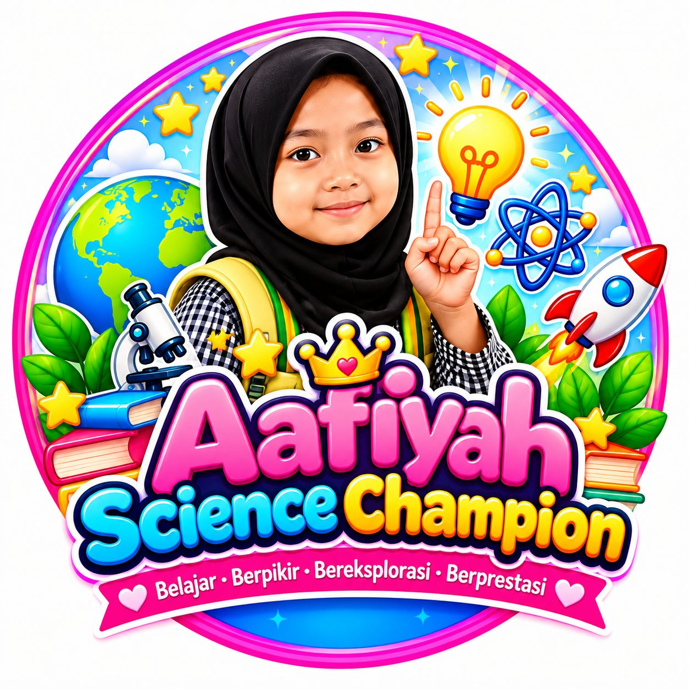

🏆 Aafiyah Science Champion
Belajar • Berpikir • Bereksplorasi • Berprestasi
Halo, Aafiyah! Pilih nomor soal, lalu tentukan cara belajarmu. 🌱
🌟 MENU BELAJAR MUDAH
📚 Pilih Nomor Soal
Klik nomor soal yang ingin dipelajari. Untuk saat ini, halaman lengkap yang sudah dihubungkan dengan gambar materi dan kuis adalah Soal Nomor 6.
🌿 Soal 06 — Perkembangbiakan Tumbuhan
Kamu bisa belajar dengan tiga cara. Pilih salah satu tombol di bawah ini.